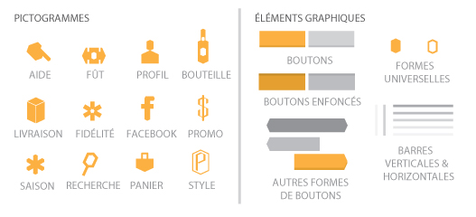

Imaginer un nouveau design pour la boutique en ligne de vente de bières traditionnelles.
Le Comptoir Bavarois est un site de vente de bières en ligne. C'est le seul importateur de bières artisanales d'origine bavaroise en France. Ces bières proviennent de brasseries traditionnelles réputées en Bavière, mais restent encore méconnues de la plupart des amateurs de bières en France.
Voir la maquetteTâches réalisées
Audit
Conception
Intégration
Amener le client dans l'ambiance authentique de la brasserie traditionnelle.
Le design des pages se veut moderne à travers l'application du flat-design, avec un jeu de couleurs cherchant à évoquer les teintes d'un verre de bière bien fraîche.
Une typographie unique pour le logo et un jeu de logos assortis ont été conçus dans le but de donner une identité visuelle propre au Comptoir Bavarois.
La boutique met en avant des visuels de qualité, une fiche produit détaillée et conseils de consommations rédigées par le vendeur lui-même. Cela permet de renforcer l'image de marque de la boutique associée à la vente de bières artisanales.

Un design pensé pour toutes résolutions d'écrans.
Afin de prolonger l'expérience d'utilisation de la boutique sur les appareils mobiles, les modèles respectant la philosophie du design responsive ont été conçus.


Du visuel brut au fonctionnel.
Le projet d'étude impliquait de mettre en fonction la maquette purement visuelle afin de donner un premier apercu réel de l'application.
Un début d'intégration s'est faite sur la version 1.4 de la plateforme e-commerce Prestashop. Il était prévu de migrer la boutique vers Magento, rendant l'intégration beaucoup moins complexe qu'à travers la solution proposée par Prestashop. Le projet sera repris en chemin par les étudiants de l'année suivante.
Lancer la version alphaProjet étudiant
Ce projet a été réalisé au cours de ma formation en Licence Professionnelle de Web Design.